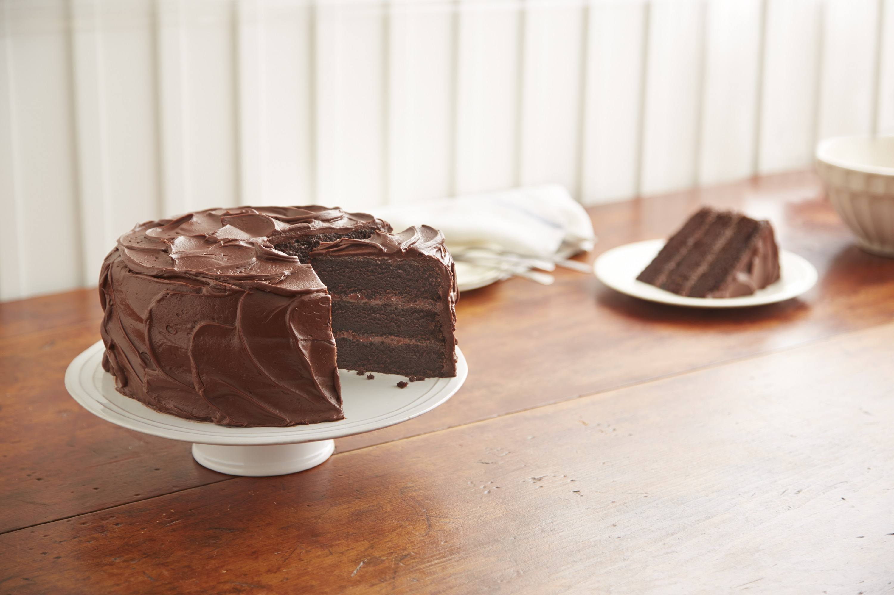

Chocolate Cake

Description
A chocolate cake is a cake made with chocolate or cocoa. The ingredients are put into a bowl and mixed together; then the mixed ingredients are put into a cake tin and put in an oven until it is fully cooked. Then the cake is taken out of the oven and placed on a cooling stand.
Ingredients
Cake
- 2 cups sugar
- 1 3/4 cups all-purpose flour
- 3/4 cup cocoa powder
- 1 1/2 teaspoons baking powder
- 1 1/2 teaspoons baking soda
- 1 teaspoon salt
- 2 eggs
- 1 cup milk
- 1/2 cup vegetable oil
- 2 teaspooons vanilla extract
- 1 cup boiling water
Frosting
- 1/2 cup butter or margarine
- 2/3 cup cocoa powder
- 3 cups powdered sugar
- 1/3 cup milk
- 1 teaspoon vanilla extract
Steps
- Heat oven to 350 degrees F. Grease and flour two 9-inch round baking pans.
- Stir together sugar, flour, cocoa, baking powder, baking soda and salt in large bowl. Add eggs, milk, oil and vanilla; beat on medium speed of mixer 2 minutes. Stir in boiling water (batter will be thin). Pour batter into prepared pans.
- Bake 30 to 35 minutes or until wooden pick inserted in center comes out clean. Cool 10 minutes; remove from pans to wire racks. Cool completely. Frost with "PERFECTLY CHOCOLATE" CHOCOLATE FROSTING.
- "PERFECTLY CHOCOLATE" CHOCOLATE FROSTING: Melt butter. Stir in cocoa. Alternately add powdered sugar and milk, beating to spreading consistency.
- Add small amount additional milk, if needed. Stir in vanilla.